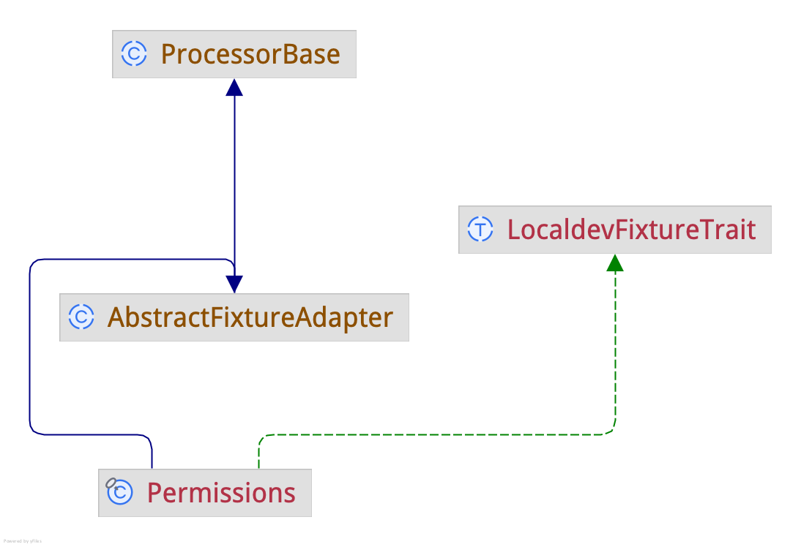

Fixture Framework Integration
Integrates aklump/fixture-framework so fixtures can be executed through the Live Dev Porter processor system. The fixture contains the task to perform, while the Fixture Runner or Fixture Adapter makes fixture(s) runnable as a Live Dev Porter processor.
Choose an Approach
Fixture Runner Class
This has the advantage of only requiring one processor to manage all fixtures, simplifying the configuration and maintenance of fixtures. It also leverages the fixture framework's built-in sorting and filtering capabilities, making it easier to manage complex fixture sets.
.live_dev_porter/processors/Fixtures.php
<?php
namespace AKlump\LiveDevPorter\Processors;
final class Fixtures extends \AKlump\LiveDevPorter\FixtureFramework\AbstractFixtureRunner {
use \AKlump\LiveDevPorter\Traits\CanProcessTrait;
protected function getGlobalOptions(): array {
return [];
}
protected function tryCanProcessFixture(\AKlump\FixtureFramework\FixtureInterface $fixture): void {
$this
->environmentIsOneOf('dev')
->hasDatabaseId()
->commandIsOneOf('pull', 'import')
->assertCanProcess();
}
}
- Runners must be declared
final. - To control when the adapter runs, override
\AKlump\LiveDevPorter\FixtureFramework\AbstractFixtureAdapter::tryCanProcess. In this example that has been done in the trait. - If the fixture requires global options, you provide them in the adapter class by overridding
\AKlump\LiveDevPorter\FixtureFramework\AbstractFixtureAdapter::getGlobalOptions. Again, this example is doing so in the trait.
Fixture Adapter Class
Instead of creating one fixture runner processor, create one a processor that extends \AKlump\LiveDevPorter\FixtureFramework\AbstractFixtureAdapter for each fixture class. These adapters connect their corresponding fixture to the Live Dev Porter processor workflow.
<?php
namespace AKlump\LiveDevPorter\Processors;
use AKlump\LiveDevPorter\Fixture\Permissions as PermissionsFixture;
use AKlump\LiveDevPorter\FixtureFramework\AbstractFixtureAdapter;
use AKlump\LiveDevPorter\Traits\LocaldevFixtureTrait;
final class Permissions extends AbstractFixtureAdapter {
use LocaldevFixtureTrait;
protected function getFixtureClass(): string {
return PermissionsFixture::class;
}
}
- Adapters must be declared
final. - The adapter class intentionally uses the same short name as the fixture class for readability, but this is only a convention.
- Adapters extend
\AKlump\LiveDevPorter\Processors\ProcessorBase, so they can use its helper methods and processor context. - To control when the adapter runs, override
\AKlump\LiveDevPorter\FixtureFramework\AbstractFixtureAdapter::tryCanProcess. In this example that has been done in the trait. - If the fixture requires global options, you provide them in the adapter class by overridding
\AKlump\LiveDevPorter\FixtureFramework\AbstractFixtureAdapter::getGlobalOptions. Again, this example is doing so in the trait.
Autoloading
- You must add the following to your host project's
composer.json
{
"autoload": {
"psr-4": {
"AKlump\\LiveDevPorter\\": ".live_dev_porter/src/"
}
}
}
Fixture Class
A fixture contains the actual work to be performed. Live Dev Porter provides a processor adapter that invokes it.
Create a Fixture class per aklump/fixture-framework in .live_dev_porter/src/Fixture
<?php
namespace AKlump\LiveDevPorter\Fixture;
use AKlump\FixtureFramework\Exception\FixtureException;
use AKlump\FixtureFramework\Fixture;
#[Fixture(id: 'permissions')]
class Permissions extends \AKlump\FixtureFramework\AbstractFixture {
private array $permissionsToAdd = [
'anonymous' => ['access environment indicator'],
'authenticated' => ['access environment indicator'],
];
public function __invoke(): void {
$drush = $this->options->require('drush');
foreach ($this->permissionsToAdd as $role => $perms) {
foreach ($perms as $perm) {
system("$drush role:perm:add $role '$perm'", $result_code);
if ($result_code != 0) {
throw new FixtureException("Failed to add permissions to $role.");
}
}
}
}
}
Working Directory Is Always the Host Project Base Path
When a fixture runs, Live Dev Porter sets the working directory to the host project base path before execution begins. @see \AKlump\LiveDevPorter\Processors\ProcessorBase::getHostProjectBasePath();
Traits for Simplicity
Traits are optional, but they can reduce boilerplate in adapter classes by consolidating shared behavior.
<?php
namespace AKlump\LiveDevPorter\Traits;
/**
* Provides helper methods for managing local development fixtures.
*
* This trait is designed to assist in processing and verifying
* environmental conditions specific to local development workflows.
*/
trait LocaldevFixtureTrait {
use \AKlump\LiveDevPorter\Traits\CanProcessTrait;
protected function tryCanProcess(): void {
$this
->environmentIsOneOf('dev')
->hasDatabaseId()
->commandIsOneOf('pull', 'import')
->assertCanProcess();
}
protected function getGlobalOptions(): array {
return [
'drush' => $this->findDrush(),
];
}
private function findDrush(): string {
$base_path = $this->getHostProjectBasePath();
exec("$base_path/bin/find_cli_tool.sh drush", $output, $result_code);
if ($result_code !== 0) {
return '';
}
return trim($output[0]);
}
}
Class Inheritance Diagram

Managing Fixture Cache
To rebuild the fixture cache, you should use --processor=flush when calling the process command in Live Dev Porter. @see \AKlump\FixtureFramework\Helper\GetFixtures::__invoke
ldp process Permissions::setUp --processor=flush